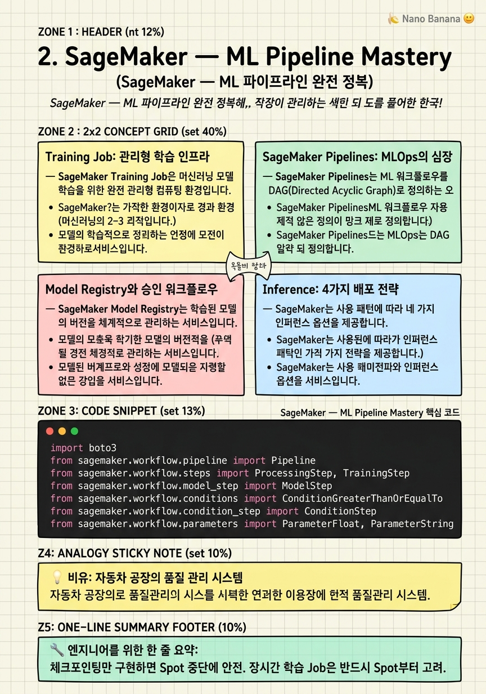

SageMaker — ML Pipeline Mastery

🎯 학습 목표
- SageMaker Training Job을 Spot Instance로 비용 효율적으로 실행할 수 있다
- SageMaker Pipelines로 재현 가능한 ML 워크플로우를 구축할 수 있다
- Model Registry를 통해 모델 버전을 체계적으로 관리할 수 있다
- 실시간 엔드포인트와 배치 변환의 사용 사례를 구분하여 설계할 수 있다
- Feature Store로 피처를 온·오프라인으로 일관되게 제공할 수 있다
ML 모델은 Jupyter Notebook에서 학습시키는 것보다 프로덕션에 안전하게 배포하고 지속적으로 모니터링하는 것이 훨씬 어렵습니다. Amazon SageMaker는 이 전체 ML 라이프사이클을 하나의 플랫폼에서 관리할 수 있는 완전 관리형 ML 서비스입니다.
SageMaker의 핵심 가치는 MLOps의 민주화입니다. Training Job은 어떤 프레임워크(TensorFlow, PyTorch, Scikit-learn, HuggingFace)든 실행할 수 있으며, 컨테이너로 패키징하면 커스텀 알고리즘도 실행 가능합니다. SageMaker Pipelines는 전처리·학습·평가·배포를 연결하는 DAG 워크플로우를 제공하여 실험의 재현성과 CI/CD 자동화를 지원합니다.
이 챕터에서는 Training Job의 Managed Spot Training, SageMaker Pipelines의 DAG 구성, Model Registry의 승인 워크플로우, Inference Endpoint의 배포 전략(Real-time, Serverless, Batch Transform, Async), 그리고 Feature Store의 온·오프라인 스토어 설계를 깊이 있게 다룹니다.
핵심 내용
Training Job: 관리형 학습 인프라
SageMaker Training Job은 머신러닝 모델 학습을 위한 완전 관리형 컴퓨팅 환경입니다. 학습 코드, 데이터 위치, 인스턴스 타입, 하이퍼파라미터를 명시하면 SageMaker가 인스턴스를 프로비저닝하고, 데이터를 S3에서 로드하고, 학습을 실행하고, 결과를 S3에 저장하고, 인스턴스를 종료합니다.
Managed Spot Training은 EC2 Spot 인스턴스를 사용하여 학습 비용을 최대 90%까지 절감합니다. Spot 인스턴스가 중단되면 SageMaker가 자동으로 체크포인트에서 재시작합니다. 이를 위해 학습 코드는 주기적으로 체크포인트를 /opt/ml/checkpoints에 저장해야 합니다.
Distributed Training은 대규모 모델을 여러 인스턴스에 분산하여 학습합니다. SageMaker는 데이터 병렬 처리(SageMaker Distributed Data Parallel)와 모델 병렬 처리(SageMaker Distributed Model Parallel)를 지원합니다. LLM 파인튜닝에는 모델 병렬이 필수입니다.
Automatic Model Tuning(HPO)은 베이지안 최적화로 하이퍼파라미터를 자동 탐색합니다. HyperparameterTuner로 탐색 범위를 정의하면 병렬로 여러 Training Job을 실행하며 최적 조합을 찾습니다.
SageMaker Pipelines: MLOps의 심장
SageMaker Pipelines는 ML 워크플로우를 DAG(Directed Acyclic Graph)로 정의하는 오케스트레이션 서비스입니다. 각 스텝의 입출력이 추적되어 실험의 재현성(reproducibility)을 보장합니다.
주요 스텝 타입은 다음과 같습니다.
- ProcessingStep: 데이터 전처리, 피처 엔지니어링, 모델 평가 - TrainingStep: 모델 학습 - TuningStep: 하이퍼파라미터 최적화 - RegisterModel: 모델을 Model Registry에 등록 - ConditionStep: 평가 메트릭 조건에 따라 분기(예: accuracy > 0.85일 때만 배포) - LambdaStep: Lambda 함수를 호출하여 커스텀 로직 실행
Pipeline 매개변수(ParameterString, ParameterFloat)를 사용하면 같은 Pipeline 정의를 다른 데이터나 하이퍼파라미터로 재실행할 수 있습니다. 이는 실험 관리의 핵심입니다.
SageMaker Pipelines는 Amazon EventBridge와 연동하여 S3 데이터 업로드 이벤트에 자동으로 재학습 파이프라인을 트리거할 수 있습니다. 이것이 CI/CD for ML 즉 Continuous Training의 기반입니다.
Model Registry와 승인 워크플로우
SageMaker Model Registry는 학습된 모델의 버전을 체계적으로 관리하는 서비스입니다. 모델 패키지(Model Package)는 모델 아티팩트, 평가 메트릭, 인퍼런스 컨테이너 정보를 하나의 단위로 묶습니다.
각 모델 패키지는 승인 상태(Approval Status)를 가집니다: PendingManualApproval, Approved, Rejected. CI/CD 파이프라인에서 자동 평가 후 메트릭이 기준을 충족하면 Approved로 변경하고, 변경 이벤트를 EventBridge가 감지하여 배포를 트리거합니다.
Model Card는 모델의 목적, 학습 데이터, 성능 메트릭, 편향 분석을 문서화하는 기능입니다. AI Act 규제 대응과 조직 내 모델 거버넌스에 점점 중요해지고 있습니다.
| 단계 | 도구 | 자동화 여부 |
|---|---|---|
| 학습 | TrainingStep | 자동 |
| 평가 | ProcessingStep + Clarify | 자동 |
| 등록 | RegisterModel | 자동 |
| 승인 | 수동 or Lambda | 혼합 |
| 배포 | EventBridge → CDK/CFN | 자동 |
Inference: 4가지 배포 전략
SageMaker는 사용 패턴에 따라 네 가지 인퍼런스 옵션을 제공합니다.
Real-time Endpoint는 HTTP 엔드포인트로 실시간 예측을 제공합니다. 수십 밀리초 레이턴시가 필요한 사용 사례(추천 시스템, 사기 탐지)에 사용합니다. 프로덕션 배리언트(traffic 분할)를 통해 A/B 테스트와 Shadow 배포를 구현할 수 있습니다.
Serverless Inference는 트래픽이 없을 때 비용이 0입니다. 콜드 스타트(1-2초)가 허용되는 워크로드에 적합합니다.
Batch Transform은 S3의 대용량 데이터를 일괄 처리합니다. 요청 시 인스턴스를 프로비저닝하고 작업 완료 후 자동 종료합니다. 실시간성이 없어도 되는 야간 배치 예측에 최적입니다.
Asynchronous Inference는 대용량 페이로드(최대 1GB)나 장시간 처리(최대 15분)가 필요한 경우입니다. 요청을 SQS 큐에 넣고 결과는 S3에 저장합니다. 비디오 분석, LLM 추론에 활용합니다.
Feature Store와 SageMaker Clarify
SageMaker Feature Store는 ML 피처를 저장·관리·공유하는 전용 스토어입니다. Online Store(저레이턴시, DynamoDB 기반)와 Offline Store(S3 기반 Parquet, 학습용)를 동시에 제공하여 학습-추론 일관성(training-serving skew 방지)을 보장합니다.
피처 그룹(Feature Group)은 관련 피처의 묶음입니다. 레코드가 삽입·업데이트될 때 Online Store가 즉시 업데이트되고, Offline Store는 변경 이력을 append로 유지합니다. 타임 트래블(특정 시점의 피처 값 조회)이 가능하여 모델 재현성을 지원합니다.
SageMaker Clarify는 모델 편향(bias)을 탐지하고 예측의 설명 가능성(explainability)을 제공합니다. Pre-training 편향(학습 데이터의 불균형), Post-training 편향(모델 예측의 차별), 피처 중요도(SHAP 값 기반)를 분석합니다. EU AI Act 및 GDPR 설명 의무 대응에 필수적인 도구입니다.
💡 비유로 이해하기
SageMaker를 자동차 공장에 비유해봅시다. Training Job은 설계도를 받아 자동차를 생산하는 조립 라인입니다. 작업자(인스턴스)를 고용하고, 부품(학습 데이터)을 조달하고, 완성차(모델 아티팩트)를 창고(S3)에 보관합니다. Spot 인스턴스는 시간제 임시직입니다. 중간에 퇴근해도 내일 다시 출근하여 체크포인트부터 이어서 작업합니다.
Model Registry는 품질 인증서입니다. 생산된 모든 자동차 모델에 번호를 부여하고, 충돌 테스트 결과(평가 메트릭)를 기록합니다. 품질 관리자가 승인해야만 출고(배포)할 수 있습니다.
Feature Store는 부품 창고입니다. 어떤 조립 라인(학습용)이든, 어떤 딜러(추론용)이든 동일한 규격의 부품을 즉시 조달할 수 있습니다. 학습 때 쓴 부품과 추론 때 쓰는 부품이 다르면(skew) 자동차 성능이 달라지는 심각한 문제가 발생합니다.
💻 코드 예시
SageMaker Pipelines로 전처리 → 학습 → 평가 → Model Registry 등록까지 이어지는 MLOps 파이프라인을 구축하는 예제입니다.
import boto3
from sagemaker.workflow.pipeline import Pipeline
from sagemaker.workflow.steps import ProcessingStep, TrainingStep
from sagemaker.workflow.model_step import ModelStep
from sagemaker.workflow.conditions import ConditionGreaterThanOrEqualTo
from sagemaker.workflow.condition_step import ConditionStep
from sagemaker.workflow.parameters import ParameterFloat, ParameterString
from sagemaker.sklearn.processing import SKLearnProcessor
from sagemaker.pytorch import PyTorch
from sagemaker.model import Model
from sagemaker import Session
sagemaker_session = Session()
role = 'arn:aws:iam::123456789:role/SageMakerRole'
region = 'ap-northeast-2'
# 파이프라인 파라미터 — 실행 시 재정의 가능
accuracy_threshold = ParameterFloat(name='AccuracyThreshold', default_value=0.85)
input_data_uri = ParameterString(name='InputDataUri')
# Step 1: 데이터 전처리
processor = SKLearnProcessor(
framework_version='1.0-1',
role=role,
instance_count=1,
instance_type='ml.m5.large',
sagemaker_session=sagemaker_session
)
processing_step = ProcessingStep(
name='PreprocessData',
processor=processor,
inputs=[{'InputName': 'raw', 'S3Input': {'S3Uri': input_data_uri, 'LocalPath': '/opt/ml/processing/input'}}],
outputs=[{'OutputName': 'train', 'S3Output': {'S3Uri': 's3://my-bucket/processed/train', 'LocalPath': '/opt/ml/processing/train'}}],
code='preprocess.py'
)
# Step 2: 모델 학습 (Managed Spot Training으로 비용 절감)
estimator = PyTorch(
entry_point='train.py',
role=role,
framework_version='2.0',
py_version='py310',
instance_count=1,
instance_type='ml.g4dn.xlarge',
use_spot_instances=True, # Spot으로 최대 90% 절감
max_wait=7200, # 최대 대기 시간 2시간
max_run=3600,
checkpoint_s3_uri='s3://my-bucket/checkpoints/', # 중단 시 재시작용
sagemaker_session=sagemaker_session
)
training_step = TrainingStep(
name='TrainModel',
estimator=estimator,
inputs={'training': processing_step.properties.ProcessingOutputConfig.Outputs['train'].S3Output.S3Uri}
)
# Step 3: 조건부 분기 — accuracy 기준 충족 시만 등록
accuracy_condition = ConditionGreaterThanOrEqualTo(
left=JsonGet(step_name='EvaluateModel', property_file='evaluation', json_path='metrics.accuracy.value'),
right=accuracy_threshold
)
condition_step = ConditionStep(
name='CheckAccuracy',
conditions=[accuracy_condition],
if_steps=[register_step], # 기준 충족 시 Model Registry 등록
else_steps=[] # 기준 미달 시 종료
)
# Pipeline 정의 및 실행
pipeline = Pipeline(
name='MyMLPipeline',
parameters=[accuracy_threshold, input_data_uri],
steps=[processing_step, training_step, condition_step],
sagemaker_session=sagemaker_session
)
pipeline.upsert(role_arn=role) # 파이프라인 생성 또는 업데이트
execution = pipeline.start(
parameters={'InputDataUri': 's3://my-bucket/raw/2026-06/', 'AccuracyThreshold': 0.87}
)
print(f'Pipeline execution ARN: {execution.arn}')ParameterFloat와 ParameterString으로 실행 시 재정의 가능한 파라미터를 정의합니다. use_spot_instances=True와 checkpoint_s3_uri 조합이 Managed Spot Training의 핵심입니다. ConditionStep이 평가 메트릭을 체크하여 기준 미달 모델이 자동으로 배포되는 것을 방지합니다. pipeline.upsert()는 파이프라인이 없으면 생성하고 있으면 업데이트하는 idempotent 연산입니다.
🏭 현업에서의 평가
✅ 시니어가 보는 것
- Training-serving skew를 Feature Store로 어떻게 방지하는지
- 모델 드리프트 감지와 자동 재학습 트리거 설계
- A/B 테스트를 위한 Production Variant 설계
- Spot 중단에 안전한 체크포인팅 구현
- 모델 평가 메트릭의 비즈니스 메트릭 연계
⚠️ 레드 플래그
- 모델을 노트북에서 직접 배포하는 방식 (재현성 없음)
- Feature Store 없이 학습/추론 피처를 별도로 관리
- 모델 버전 관리 없이 매번 엔드포인트를 재생성
- Model Monitor 없이 배포 후 성능 모니터링 부재
🎤 예상 인터뷰 질문
- SageMaker Pipelines의 ConditionStep을 사용하지 않고 배포한다면 어떤 위험이 있나요?
- 온라인 Feature Store와 오프라인 Feature Store를 동시에 유지하는 이유는 무엇인가요?
- Serverless Inference와 Real-time Endpoint 중 어떤 상황에 무엇을 선택하겠습니까?
✨ 핵심 요약
Managed Spot Training으로 비용 90% 절감
체크포인팅만 구현하면 Spot 중단에 안전. 장시간 학습 Job은 반드시 Spot부터 고려.
Pipelines가 재현성을 보장
실험의 재현성은 데이터·코드·환경·하이퍼파라미터가 모두 버전 관리될 때만 가능. SageMaker Pipelines는 이를 자동화.
ConditionStep이 불량 모델 배포를 막는다
평가 메트릭 기준을 Pipeline에 내장하면 성능 저하 모델이 자동 배포되는 사고를 방지.
4가지 Inference 전략을 사용 패턴으로 선택
실시간 → Real-time, 콜드스타트 허용 → Serverless, 대용량 배치 → Batch Transform, 비디오·LLM → Async.
Feature Store = Training-Serving 일관성
학습과 추론에서 동일한 피처를 사용해야 모델 성능이 유지됨. Feature Store 없이는 skew가 불가피.
Model Registry로 거버넌스 확보
모든 모델은 Registry를 통해 승인·배포. 누가 언제 어떤 버전을 배포했는지 완전한 감사 추적.
Clarify로 편향을 선제적으로 탐지
모델이 특정 그룹에 불공정한 예측을 하는지 배포 전에 반드시 검증. AI 규제 대응의 첫걸음.
SageMaker Studio는 MLOps의 UI 통합
실험 추적, 파이프라인 모니터링, Model Registry 관리를 단일 UI에서. 팀 협업의 허브.